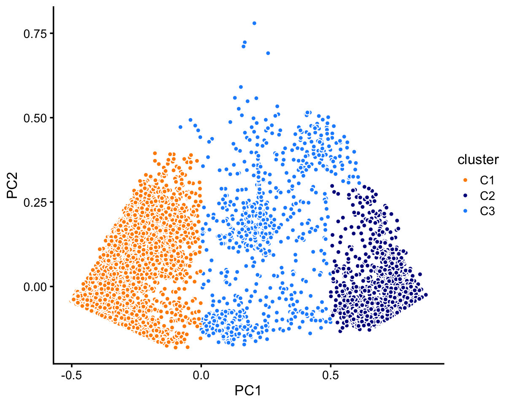
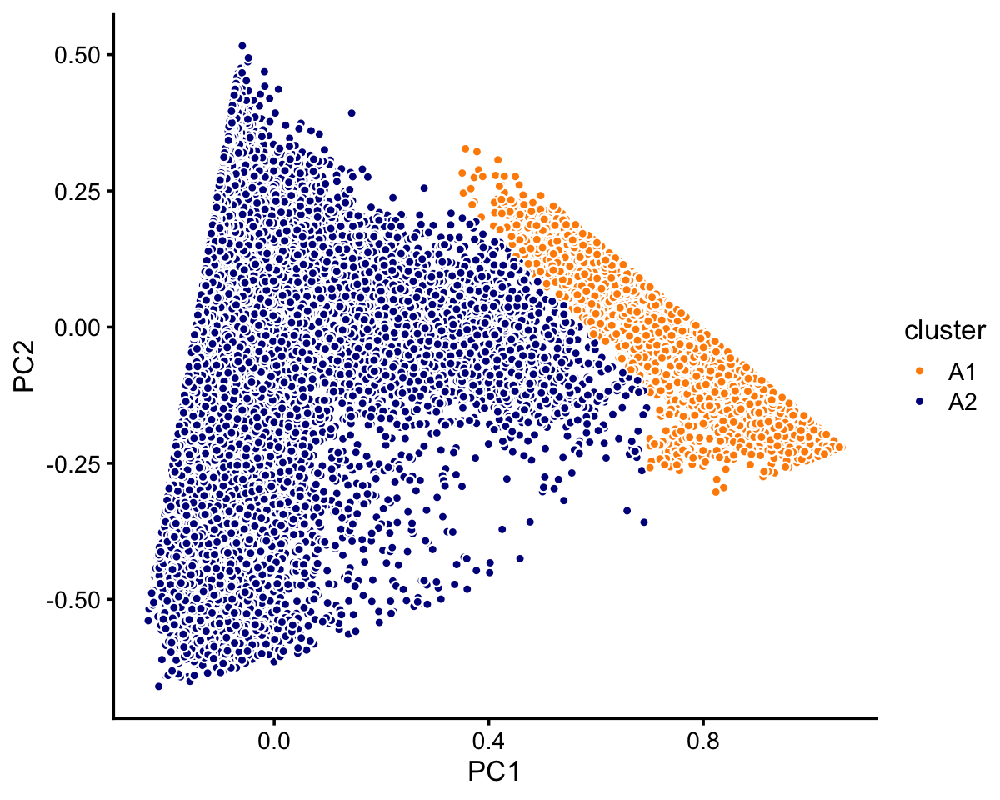
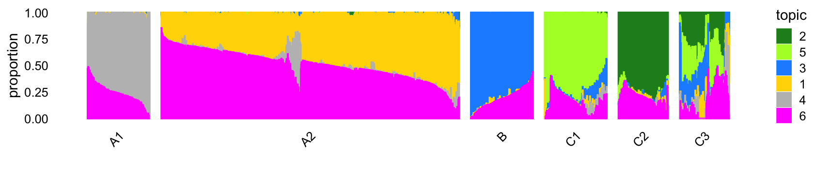
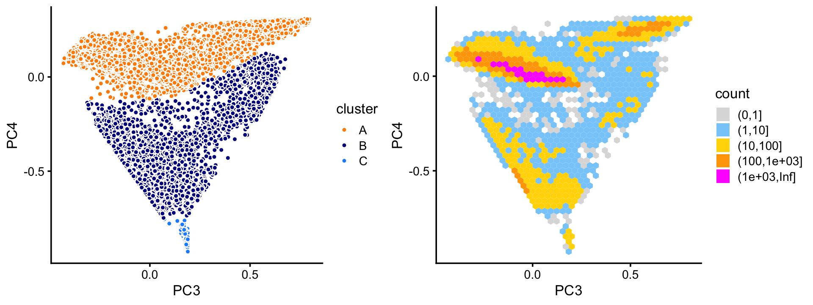
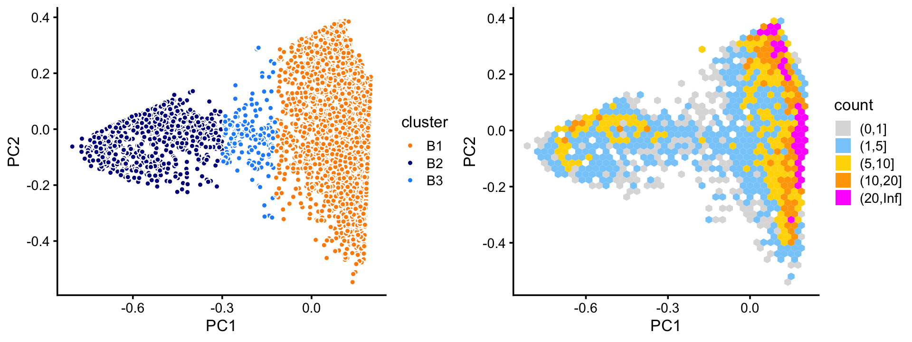
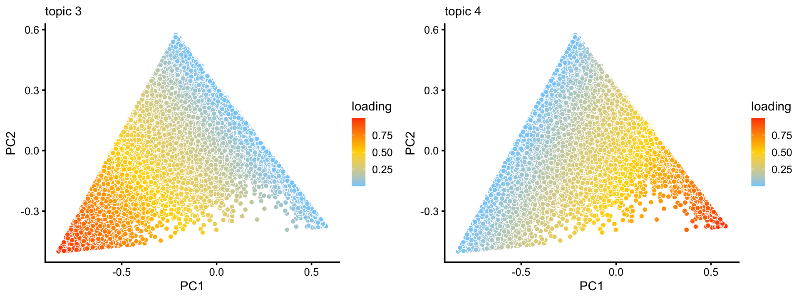
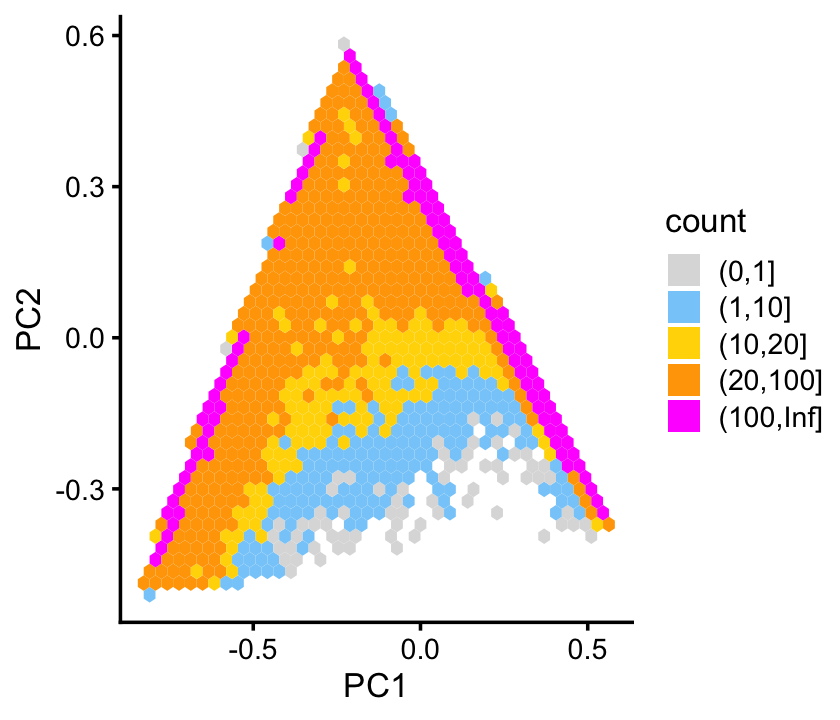
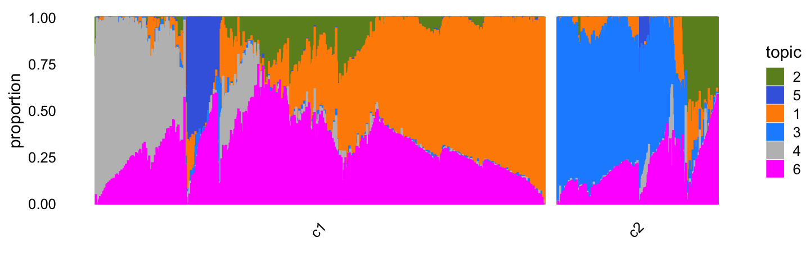

Visualize and interpret topics in PBMC data
Peter Carbonetto
Last updated: 2020-08-27
Checks: 7 0
Knit directory: single-cell-topics/analysis/
This reproducible R Markdown analysis was created with workflowr (version 1.6.2.9000). The Checks tab describes the reproducibility checks that were applied when the results were created. The Past versions tab lists the development history.
Great! Since the R Markdown file has been committed to the Git repository, you know the exact version of the code that produced these results.
Great job! The global environment was empty. Objects defined in the global environment can affect the analysis in your R Markdown file in unknown ways. For reproduciblity it’s best to always run the code in an empty environment.
The command set.seed(1) was run prior to running the code in the R Markdown file. Setting a seed ensures that any results that rely on randomness, e.g. subsampling or permutations, are reproducible.
Great job! Recording the operating system, R version, and package versions is critical for reproducibility.
Nice! There were no cached chunks for this analysis, so you can be confident that you successfully produced the results during this run.
Great job! Using relative paths to the files within your workflowr project makes it easier to run your code on other machines.
Great! You are using Git for version control. Tracking code development and connecting the code version to the results is critical for reproducibility.
The results in this page were generated with repository version 070f612. See the Past versions tab to see a history of the changes made to the R Markdown and HTML files.
Note that you need to be careful to ensure that all relevant files for the analysis have been committed to Git prior to generating the results (you can use wflow_publish or wflow_git_commit). workflowr only checks the R Markdown file, but you know if there are other scripts or data files that it depends on. Below is the status of the Git repository when the results were generated:
Ignored files:
Ignored: data/droplet.RData
Ignored: data/pbmc_68k.RData
Ignored: data/pbmc_purified.RData
Ignored: data/pulseseq.RData
Ignored: output/droplet/fits-droplet.RData
Ignored: output/droplet/rds/
Ignored: output/pbmc-68k/fits-pbmc-68k.RData
Ignored: output/pbmc-68k/rds/
Ignored: output/pbmc-purified/fits-pbmc-purified.RData
Ignored: output/pbmc-purified/rds/
Ignored: output/pulseseq/fits-pulseseq.RData
Ignored: output/pulseseq/rds/
Note that any generated files, e.g. HTML, png, CSS, etc., are not included in this status report because it is ok for generated content to have uncommitted changes.
These are the previous versions of the repository in which changes were made to the R Markdown (analysis/plots_pbmc.Rmd) and HTML (docs/plots_pbmc.html) files. If you’ve configured a remote Git repository (see ?wflow_git_remote), click on the hyperlinks in the table below to view the files as they were in that past version.
| File | Version | Author | Date | Message |
|---|---|---|---|---|
| Rmd | 070f612 | Peter Carbonetto | 2020-08-27 | workflowr::wflow_publish(“plots_pbmc.Rmd”, verbose = TRUE) |
| Rmd | 5ee1a1d | Peter Carbonetto | 2020-08-27 | Made some refinements to the 68k pbmc analysis in plots_pbmc.Rmd. |
| html | 25a24f7 | Peter Carbonetto | 2020-08-27 | Build site. |
| Rmd | 655dfae | Peter Carbonetto | 2020-08-27 | workflowr::wflow_publish(“plots_pbmc.Rmd”) |
| html | 208d263 | Peter Carbonetto | 2020-08-27 | Added hex plots to plots_pbmc. |
| Rmd | 8bfc908 | Peter Carbonetto | 2020-08-27 | workflowr::wflow_publish(“plots_pbmc.Rmd”) |
| Rmd | d4f9ec7 | Peter Carbonetto | 2020-08-27 | A couple small edits to the text in plots_pbmc. |
| html | 30d2ef1 | Peter Carbonetto | 2020-08-27 | Added hex plot to plots_pbmc analysis. |
| Rmd | 6507d90 | Peter Carbonetto | 2020-08-27 | workflowr::wflow_publish(“plots_pbmc.Rmd”) |
| Rmd | 3ab7da1 | Peter Carbonetto | 2020-08-25 | A few minor edits. |
| Rmd | 2defe6d | Peter Carbonetto | 2020-08-25 | Added crosstab plot to plots_tracheal_epithelium analysis. |
| html | e23f091 | Peter Carbonetto | 2020-08-25 | Added a few more notes to plots_pbmc. |
| Rmd | 0ca90f1 | Peter Carbonetto | 2020-08-25 | workflowr::wflow_publish(“plots_pbmc.Rmd”) |
| html | 94370c2 | Peter Carbonetto | 2020-08-25 | Added notes adjoining results on 68k data in plots_pbmc. |
| Rmd | c6e754d | Peter Carbonetto | 2020-08-25 | workflowr::wflow_publish(“plots_pbmc.Rmd”) |
| html | 399c597 | Peter Carbonetto | 2020-08-25 | Added another few clusters to 68k fit, revised structure plot, and |
| Rmd | 1a0c2d8 | Peter Carbonetto | 2020-08-25 | workflowr::wflow_publish(“plots_pbmc.Rmd”) |
| html | eac2d23 | Peter Carbonetto | 2020-08-25 | Revised the cross-tab plot, and added notes to plots_pbmc analysis. |
| html | 2d156b8 | Peter Carbonetto | 2020-08-25 | Revised the cross-tab plot, and added notes to plots_pbmc analysis. |
| Rmd | e8971d8 | Peter Carbonetto | 2020-08-25 | workflowr::wflow_publish(“plots_pbmc.Rmd”) |
| Rmd | 9d8bb28 | Peter Carbonetto | 2020-08-25 | Revised structure plot in plots_pbmc. |
| Rmd | 27f6f51 | Peter Carbonetto | 2020-08-25 | A couple small adjustments to the plotting settings in plots_pbmc. |
| html | abb846e | Peter Carbonetto | 2020-08-25 | Added dotplot to compare clusters vs. cell-types. |
| Rmd | 45c3c32 | Peter Carbonetto | 2020-08-25 | workflowr::wflow_publish(“plots_pbmc.Rmd”) |
| html | f53c86c | Peter Carbonetto | 2020-08-24 | Made a few small improvements to plots_pbmc. |
| Rmd | f7c157a | Peter Carbonetto | 2020-08-24 | workflowr::wflow_publish(“plots_pbmc.Rmd”) |
| Rmd | e13c17e | Peter Carbonetto | 2020-08-24 | Removed reordering of 68k fit, and fixed downstream PCA analyses. |
| Rmd | 01a0c8b | Peter Carbonetto | 2020-08-24 | Fixed colours in 68k structure plot. |
| html | a0cb7c6 | Peter Carbonetto | 2020-08-24 | Added 68k fit structure plot to plots_pbmc analysis. |
| Rmd | 5b2fb5c | Peter Carbonetto | 2020-08-24 | workflowr::wflow_publish(“plots_pbmc.Rmd”) |
| html | b6489db | Peter Carbonetto | 2020-08-23 | Re-built plots_pbmc with new PCA plots from 68k fit. |
| Rmd | 89d98ed | Peter Carbonetto | 2020-08-23 | Removed basic_pca_plot in plots.R; working on PCA plots for 68k fit. |
| html | 13ee038 | Peter Carbonetto | 2020-08-23 | Revised notes in plots_pbmc.Rmd. |
| Rmd | e766da5 | Peter Carbonetto | 2020-08-23 | workflowr::wflow_publish(“plots_pbmc.Rmd”) |
| Rmd | dbd5882 | Peter Carbonetto | 2020-08-23 | Added some explanatory text to plots_pbmc.Rmd. |
| html | 97d7e86 | Peter Carbonetto | 2020-08-23 | Fixed subclustering of cluster A in purified PBMC data. |
| Rmd | 005b217 | Peter Carbonetto | 2020-08-23 | workflowr::wflow_publish(“plots_pbmc.Rmd”) |
| html | 59777e7 | Peter Carbonetto | 2020-08-22 | Added table comparing Zheng et al (2017) labeling with clusters in |
| Rmd | 9cd4a08 | Peter Carbonetto | 2020-08-22 | workflowr::wflow_publish(“plots_pbmc.Rmd”) |
| html | c87ddf8 | Peter Carbonetto | 2020-08-22 | Added PBMC purified structure plot with the new clustering (A1, A2, B, |
| Rmd | c6dd5f2 | Peter Carbonetto | 2020-08-22 | workflowr::wflow_publish(“plots_pbmc.Rmd”) |
| html | ce421ae | Peter Carbonetto | 2020-08-22 | A few small revisions to plots_pbmc analysis. |
| Rmd | ddc6de4 | Peter Carbonetto | 2020-08-22 | workflowr::wflow_publish(“plots_pbmc.Rmd”) |
| html | a406a2f | Peter Carbonetto | 2020-08-22 | Added back first PCA plot for 68k pbmc data. |
| Rmd | 8daa131 | Peter Carbonetto | 2020-08-22 | workflowr::wflow_publish(“plots_pbmc.Rmd”) |
| html | 7900d17 | Peter Carbonetto | 2020-08-22 | Revamping the process of defining clusters in plots_pbmc using PCA. |
| Rmd | 14dd774 | Peter Carbonetto | 2020-08-22 | workflowr::wflow_publish(“plots_pbmc.Rmd”) |
| Rmd | 944ce0c | Peter Carbonetto | 2020-08-22 | Working on new PCA plots for purified PBMC c3 subclusters. |
| html | b05232d | Peter Carbonetto | 2020-08-22 | Build site. |
| Rmd | d0e9f6e | Peter Carbonetto | 2020-08-22 | workflowr::wflow_publish(“plots_pbmc.Rmd”) |
| html | fbb0697 | Peter Carbonetto | 2020-08-21 | Build site. |
| Rmd | cdca13e | Peter Carbonetto | 2020-08-21 | workflowr::wflow_publish(“plots_pbmc.Rmd”) |
| html | 216027a | Peter Carbonetto | 2020-08-21 | Re-built plots_pbmc webpage with structure plots. |
| Rmd | 98888b2 | Peter Carbonetto | 2020-08-21 | Added structure plots to plots_pbmc.R. |
| html | 9310993 | Peter Carbonetto | 2020-08-21 | Revised the PCA plots in pbmc_plots. |
| Rmd | 3a746ff | Peter Carbonetto | 2020-08-21 | workflowr::wflow_publish(“plots_pbmc.Rmd”) |
| Rmd | 1091dd0 | Peter Carbonetto | 2020-08-21 | Added code for Ternary plots to plots_pbmc. |
| html | 6d3d7e4 | Peter Carbonetto | 2020-08-20 | Added 68k PCA plots to plots_pbmc. |
| Rmd | 6ec82ca | Peter Carbonetto | 2020-08-20 | workflowr::wflow_publish(“plots_pbmc.Rmd”) |
| html | 38f07a2 | Peter Carbonetto | 2020-08-20 | A few small revisions to the plots_pbmc analysis. |
| Rmd | fd0316f | Peter Carbonetto | 2020-08-20 | workflowr::wflow_publish(“plots_pbmc.Rmd”) |
| html | 606cd97 | Peter Carbonetto | 2020-08-20 | Added basic PCA plots to plots_pbmc. |
| Rmd | 1b41a60 | Peter Carbonetto | 2020-08-20 | workflowr::wflow_publish(“plots_pbmc.Rmd”) |
| html | d6e5d39 | Peter Carbonetto | 2020-08-20 | Added PCA plot with purified PBMC clustering to plots_pbmc analysis. |
| Rmd | 99301a7 | Peter Carbonetto | 2020-08-20 | workflowr::wflow_publish(“plots_pbmc.Rmd”) |
| Rmd | bf23ca0 | Peter Carbonetto | 2020-08-20 | Added manual labeling of purified PBMC data to plots_pbmc analysis. |
| html | 0c1b570 | Peter Carbonetto | 2020-08-20 | First build on plots_pbmc page. |
| Rmd | eb7f776 | Peter Carbonetto | 2020-08-20 | workflowr::wflow_publish(“plots_pbmc.Rmd”) |
Here we examine and compare the topic modeling results for the two closely related data sets from Zheng et al (2017), the mixture of FACS-purified PBMC data sets, and the “unsorted” 68k PBMC data. The goal of this analysis is to illustrate how the topic models fitted to these data sets can be used to learn about structure in the data. In particular, we would like to identify clusters, and interpret clusters and topics as “cell types” or “gene expression programs”.
Load the packages used in the analysis below, as well as additional functions that will be used to generate some of the plots.
library(dplyr)
library(fastTopics)
library(ggplot2)
library(cowplot)
source("../code/plots.R")Mixture of FACS-purified PBMC data
We begin with the mixture of FACS-purified PBMC data. Note that the count data are no longer needed at this stage.
load("../data/pbmc_purified.RData")
samples_purified <- samples
rm(samples,genes,counts)Load the \(k = 6\) Poisson NMF model fit.
fit_purified <-
readRDS("../output/pbmc-purified/rds/fit-pbmc-purified-scd-ex-k=6.rds")$fitHere, we explore the structure of the single-cell data as inferred by the topic model. Specifically, we use PCA to uncover structure in the estimated topic proportions of the multinomial topic model. Although PCA is simple, we will see that it works well, both for visualization and identifying clusters, and avoids the complications of the popular t-SNE and UMAP nonlinear dimensionality reduction methods. (Note that, since the topic proportions sum to 1, there are only 5 PCs to examine, not 6.)
fit <- poisson2multinom(fit_purified)
pca <- prcomp(fit$L)$xThree large clusters are evident from first two PCs. We label the three large clusters as “A”, “B” and “C”.
Since there are so many samples, the scatterplot suffers from “overplotting”. So it also helpful to view this PC projection as a density plot.
n <- nrow(pca)
x <- rep("C",n)
pc1 <- pca[,"PC1"]
pc2 <- pca[,"PC2"]
x[pc1 + 0.2 > pc2] <- "A"
x[pc2 > 0.25] <- "B"
x[(pc1 + 0.4)^2 + (pc2 + 0.1)^2 < 0.07] <- "C"
samples_purified$cluster <- x
p1 <- pca_plot_with_labels(fit_purified,c("PC1","PC2"),
samples_purified$cluster) +
labs(fill = "cluster")
p2 <- pca_hex_plot(fit_purified,c("PC1","PC2"))
plot_grid(p1,p2,rel_widths = c(9,10))
Most of the samples are in cluster A:
table(x)
# x
# A B C
# 72614 10439 11602A small number of outlying data points do not seem to belong to any the three clusters, or they fall in between the clusters. For these data points, we assign them (rather arbitrarily) to one of the three clusters.
From these plots, there also also appears to be finer scale structure. For example, judging by the density plot, cluster A appears to split into two subclusters. We will examine this finer scale structure below.
Also note that other PCs beyond the first two may also sometimes reveal additional clustering, and we will see examples of this in the 68k PBMC data.
Within cluster C, there are two mostly well-defined subclusters (labeled “C1” and “C2”). There appear to be at least a couple other smaller, less well-defined subclusters, but in this analysis we focus on the largest, most obvious clusters.
rows <- which(samples_purified$cluster == "C")
fit <- select(poisson2multinom(fit_purified),loadings = rows)
pca <- prcomp(fit$L)$x
n <- nrow(pca)
x <- rep("C3",n)
pc1 <- pca[,1]
pc2 <- pca[,2]
x[pc1 < 0 & pc2 < 0.4] <- "C1"
x[pc1 > 0.5 & pc2 < 0.15] <- "C2"
samples_purified[rows,"cluster"] <- x
p3 <- pca_plot_with_labels(fit,c("PC1","PC2"),x) +
labs(fill = "cluster")
p4 <- pca_hex_plot(fit,c("PC1","PC2"),bins = c(0,1,5,10,100,Inf))
plot_grid(p3,p4,rel_widths = c(9,10))
The two subclusters, C1 and C2, account for most of the samples in cluster C. We also define a third subset, C3—a “background cluster”—containing all the samples that were not assigned to C1 or C2.
table(x)
# x
# C1 C2 C3
# 7822 2909 871Now we turn to cluster A. Within this cluster, there is a large subcluster, which we label as “A1”; the subset of samples that are not assigned to this cluster are labeled “A2”. (The A1 subcluster is much less distinct than the other clusters we have seen so far, and may not show up clearly in this scatterplot—it is more apparent from the density plot.) Otherwise, there is no obvious additional clustering of the samples within cluster A.
rows <- which(samples_purified$cluster == "A")
fit <- select(poisson2multinom(fit_purified),loadings = rows)
pca <- prcomp(fit$L)$x
n <- nrow(fit$L)
x <- rep("A2",n)
pc1 <- pca[,1]
pc2 <- pca[,2]
x[pc1 > 0.55 - pc2 | pc1 > 0.65] <- "A1"
samples_purified[rows,"cluster"] <- x
p5 <- pca_plot_with_labels(fit,c("PC1","PC2"),x) +
labs(fill = "cluster")
p6 <- pca_hex_plot(fit,c("PC1","PC2"))
plot_grid(p5,p6,rel_widths = c(9,10))
In summary, we have subdivided the data into 6 subsets:
samples_purified$cluster <- factor(samples_purified$cluster)
table(samples_purified$cluster)
#
# A1 A2 B C1 C2 C3
# 8352 64262 10439 7822 2909 871We also inspected principal components individually in each of these 6 clusters and we did not find any of clear-cut examples of subclustering withing these clusters.
The structure plot summarizes the topic proportions in each of these 6 subsets:
set.seed(1)
pbmc_purified_topic_colors <- c("gold","forestgreen","dodgerblue",
"gray","greenyellow","magenta")
pbmc_purified_topics <- c(2,5,3,1,4,6)
rows <- sort(c(sample(which(samples_purified$cluster == "A1"),250),
sample(which(samples_purified$cluster == "A2"),1200),
sample(which(samples_purified$cluster == "B"),250),
sample(which(samples_purified$cluster == "C1"),250),
sample(which(samples_purified$cluster == "C2"),200),
sample(which(samples_purified$cluster == "C3"),200)))
p7 <- structure_plot(select(poisson2multinom(fit_purified),loadings = rows),
grouping = samples_purified[rows,"cluster"],
topics = pbmc_purified_topics,
colors = pbmc_purified_topic_colors[pbmc_purified_topics],
n = Inf,perplexity = c(70,100,70,70,50,50),
gap = 40,num_threads = 4,verbose = FALSE)
print(p7)
| Version | Author | Date |
|---|---|---|
| 208d263 | Peter Carbonetto | 2020-08-27 |
| eac2d23 | Peter Carbonetto | 2020-08-25 |
| 2d156b8 | Peter Carbonetto | 2020-08-25 |
| abb846e | Peter Carbonetto | 2020-08-25 |
| f53c86c | Peter Carbonetto | 2020-08-24 |
| 13ee038 | Peter Carbonetto | 2020-08-23 |
| 97d7e86 | Peter Carbonetto | 2020-08-23 |
| 59777e7 | Peter Carbonetto | 2020-08-22 |
| c87ddf8 | Peter Carbonetto | 2020-08-22 |
| 7900d17 | Peter Carbonetto | 2020-08-22 |
| fbb0697 | Peter Carbonetto | 2020-08-21 |
| 216027a | Peter Carbonetto | 2020-08-21 |
Out of the 6 topics, 4 of them (\(k = 2, 3, 4, 5\)) align closely with clusters (labeled A1, B, C1, C2). And, indeed, they align closely with their inclusion in the individual FACS-purified data sets:
with(samples_purified,table(celltype,cluster))
# cluster
# celltype A1 A2 B C1 C2 C3
# CD19+ B 0 3 10073 0 0 9
# CD14+ Monocyte 0 30 8 1 2369 204
# CD34+ 4 43 352 7740 539 554
# CD4+ T Helper2 1 11183 0 16 0 13
# CD56+ NK 8285 78 0 17 1 4
# CD8+ Cytotoxic T 60 10096 0 0 0 53
# CD4+/CD45RO+ Memory 0 10201 0 19 0 4
# CD8+/CD45RA+ Naive Cytotoxic 1 11945 3 0 0 4
# CD4+/CD45RA+/CD25- Naive T 1 10440 1 25 0 12
# CD4+/CD25 T Reg 0 10243 2 4 0 14Based on the above results, we make a few observations:
Because of their close correspondence, subsequent analysis of topics 2, 3, 4 and 5 should yield similar results to analyzing the clusters A1, B, C1, C2. For example, cluster B corresponds almost exactly to the B-cell data set. The largest cluster, cluster A2, is mostly comprised of T-cells.
Cluster A2—see also the PCA plot above—is an example where analyzing the most prevalent topics (\(k = 1, 6\)) will yield different results than a cluster-based analysis.
Many samples labeled as “CD34+” are not assigned to the CD34+ cluster (C1). This reflects the fact that this population was much less pure (45%) than the others, so we would expect some cells labeled as “CD34+” to not necessarily be CD34+ cells.
Cluster C3 is a heterogeneous cluster with a relatively small number of samples (790) that could potentially contain additional clusters of biological relevance, but will likely be more challenging to analyze and interpret than the other clusters, so we do not investigate this cluster further.
In summary, a cluster-based analysis and topic-based analysis should yield mostly similar results, except for the analysis of cluster A2, which should benefit from a topic-based analysis.
Unsorted 68k PBMC data
Next, we turn to the 68k data set.
load("../data/pbmc_68k.RData")
samples_68k <- samples
rm(samples,genes,counts)Load the \(k = 6\) Poisson NMF model fit, and compute PCs from the topic proportions.
fit_68k <- readRDS("../output/pbmc-68k/rds/fit-pbmc-68k-scd-ex-k=6.rds")$fit
fit <- poisson2multinom(fit_68k)
pca <- prcomp(fit$L)$xFrom the \(k = 6\) fit, we find least three distinct clusters in the projection onto PCs 3 and 4. We label these clusters “A”, “B” and “C”, as above, while cautioning that this labeling does not imply a connection with the purified PBMC clusters above.
n <- nrow(pca)
x <- rep("A",n)
pc3 <- pca[,"PC3"]
pc4 <- pca[,"PC4"]
x[pc4 < -0.12 | pc3/1.9 - 0.17 > pc4] <- "B"
x[pc4 < -0.75] <- "C"
samples_68k$cluster <- x
p8 <- pca_plot_with_labels(fit_68k,c("PC3","PC4"),x) +
labs(fill = "cluster")
p9 <- pca_hex_plot(fit_68k,c("PC3","PC4"))
plot_grid(p8,p9,rel_widths = c(9,10))
The vast majority of the cells are in cluster A.
table(samples_68k$cluster)
#
# A B C
# 63405 5009 165The wide range in the sizes of these clusters is striking; the smallest cluster (C) is less than 1% the size of the largest (A1). By contrast, community detection methods such as the Louvain algorithm are preferentially biased toward more uniformly sized clusters (this is a known limitation of community detection methods).
Looking more closely at the top two PCs in cluster B, we identify two large clusters, with the remaining samples assigned to a “background” cluster, B3.
rows <- which(samples_68k$cluster == "B")
fit <- select(poisson2multinom(fit_68k),loadings = rows)
pca <- prcomp(fit$L)$x
n <- nrow(pca)
x <- rep("B3",n)
pc1 <- pca[,"PC1"]
x[pc1 > -0.12] <- "B1"
x[pc1 < -0.3] <- "B2"
samples_68k[rows,"cluster"] <- x
p10 <- pca_plot_with_labels(fit,c("PC1","PC2"),x) +
labs(fill = "cluster")
p11 <- pca_hex_plot(fit,c("PC1","PC2"),bins = c(0,1,5,10,20,Inf))
plot_grid(p10,p11,rel_widths = c(9,10))
Cluster A subdivides fairly into two large clusters, labeled A1 and A2. The remaining in-between samples are assigned to subset A3.
rows <- which(samples_68k$cluster == "A")
fit <- select(poisson2multinom(fit_68k),loadings = rows)
pca <- prcomp(fit$L)$x
n <- nrow(pca)
x <- rep("A3",n)
pc2 <- pca[,"PC2"]
pc3 <- pca[,"PC3"]
x[2.5*pc3 < 0.4 - pc2] <- "A1"
x[pc3 > 0.75 - pc2] <- "A2"
samples_68k[rows,"cluster"] <- x
p12 <- pca_plot_with_labels(fit,c("PC2","PC3"),x) +
labs(fill = "cluster")
p13 <- pca_hex_plot(fit,c("PC2","PC3"),bins = c(0,1,5,10,100,Inf))
plot_grid(p12,p13,rel_widths = c(9,10))
Within cluster A, the vast majority of the samples are assigned to the A1 subcluster:
table(x)
# x
# A1 A2 A3
# 59294 3589 522rows <- which(samples_68k$cluster == "A1")
fit <- select(poisson2multinom(fit_68k),loadings = rows)
p14 <- pca_plot(fit,k = 3:4)
print(p14)
| Version | Author | Date |
|---|---|---|
| 399c597 | Peter Carbonetto | 2020-08-25 |
p15 <- pca_hex_plot(fit,c("PC1","PC2"),bins = c(0,1,10,20,100,Inf))
print(p15)
In summary, we have subdivided these data into 7 subsets:
samples_68k$cluster <- factor(samples_68k$cluster)
table(samples_68k$cluster)
#
# A1 A2 A3 B1 B2 B3 C
# 59294 3589 522 4011 819 179 165The structure plot summarizes the topic proportions in each of these 7 subsets:
set.seed(1)
pbmc_68k_topic_colors <- c("yellow","lightskyblue","salmon",
"firebrick","royalblue","olivedrab")
pbmc_68k_topics <- c(2,5,1,3,4,6)
rows <- sort(c(sample(which(samples_68k$cluster == "A1"),1200),
sample(which(samples_68k$cluster == "A2"),500),
sample(which(samples_68k$cluster == "A3"),300),
sample(which(samples_68k$cluster == "B1"),500),
sample(which(samples_68k$cluster == "B2"),300),
which(samples_68k$cluster == "B3"),
which(samples_68k$cluster == "C")))
p16 <- structure_plot(select(poisson2multinom(fit_68k),loadings = rows),
grouping = samples_68k[rows,"cluster"],
topics = pbmc_68k_topics,
colors = pbmc_68k_topic_colors[pbmc_68k_topics],
perplexity = c(100,100,50,100,50,50,50),
n = Inf,gap = 40,num_threads = 4,verbose = FALSE)
print(p16)
These subsets do not align as closely with the cell-type labeling inferred by Zheng et al (2017), which is not surprising considering that this labeling is based on the FACS-purified data set.
with(samples_68k,table(celltype,cluster))
# cluster
# celltype A1 A2 A3 B1 B2 B3 C
# CD14+ Monocyte 6 1 1 2840 1 11 2
# CD19+ B 1983 3577 310 0 37 1 0
# CD34+ 10 5 47 30 21 1 163
# CD4+ T Helper2 67 0 16 6 8 0 0
# CD4+/CD25 T Reg 6174 0 11 2 0 0 0
# CD4+/CD45RA+/CD25- Naive T 1863 1 4 1 3 1 0
# CD4+/CD45RO+ Memory 3059 0 0 2 0 0 0
# CD56+ NK 8734 0 24 12 1 5 0
# CD8+ Cytotoxic T 20672 1 74 24 0 2 0
# CD8+/CD45RA+ Naive Cytotoxic 16649 0 9 0 5 3 0
# Dendritic 77 4 26 1094 743 155 0A few notes about these results:
As in the purified fit, here we identify a B-cells cluster (B) and topic (5) that closely match.
We also identify what is most likely a cluster of CD34+ cells (C), although the corresponding topic (6) is not distinctive to this cluster, so it remains to be seen if topic 6 also characterises CD34+ cells.
Unlike the FACS-purified data, don’t identify a clear-cut cluster for NK cells; the NK cells are mixed in with the T-cells (subset A1). NK cells will emerge only after subsequent analysis of topic 3.
Some of the distinct clusters (e.g., B1a, B1b, B2) are characterized by mixtures of topics, so if these clusters do indeed correspond to interesting cell types, analyzing the topics alone may not shed light onto these cell types.
In summary, the topics and clusters seem to offer very much complementary biological insights, although subsequent analysis is needed to determine what these insights are.
sessionInfo()
# R version 3.6.2 (2019-12-12)
# Platform: x86_64-apple-darwin15.6.0 (64-bit)
# Running under: macOS Catalina 10.15.5
#
# Matrix products: default
# BLAS: /Library/Frameworks/R.framework/Versions/3.6/Resources/lib/libRblas.0.dylib
# LAPACK: /Library/Frameworks/R.framework/Versions/3.6/Resources/lib/libRlapack.dylib
#
# locale:
# [1] en_US.UTF-8/en_US.UTF-8/en_US.UTF-8/C/en_US.UTF-8/en_US.UTF-8
#
# attached base packages:
# [1] stats graphics grDevices utils datasets methods base
#
# other attached packages:
# [1] cowplot_1.0.0 ggplot2_3.3.0 fastTopics_0.3-165 dplyr_0.8.3
#
# loaded via a namespace (and not attached):
# [1] ggrepel_0.9.0 Rcpp_1.0.5 lattice_0.20-38
# [4] tidyr_1.0.0 prettyunits_1.1.1 assertthat_0.2.1
# [7] zeallot_0.1.0 rprojroot_1.3-2 digest_0.6.23
# [10] R6_2.4.1 backports_1.1.5 MatrixModels_0.4-1
# [13] evaluate_0.14 coda_0.19-3 httr_1.4.1
# [16] pillar_1.4.3 rlang_0.4.5 progress_1.2.2
# [19] lazyeval_0.2.2 data.table_1.12.8 irlba_2.3.3
# [22] SparseM_1.78 hexbin_1.28.0 whisker_0.4
# [25] Matrix_1.2-18 rmarkdown_2.3 labeling_0.3
# [28] Rtsne_0.15 stringr_1.4.0 htmlwidgets_1.5.1
# [31] munsell_0.5.0 compiler_3.6.2 httpuv_1.5.2
# [34] xfun_0.11 pkgconfig_2.0.3 mcmc_0.9-6
# [37] htmltools_0.4.0 tidyselect_0.2.5 tibble_2.1.3
# [40] workflowr_1.6.2.9000 quadprog_1.5-8 viridisLite_0.3.0
# [43] crayon_1.3.4 withr_2.1.2 later_1.0.0
# [46] MASS_7.3-51.4 grid_3.6.2 jsonlite_1.6
# [49] gtable_0.3.0 lifecycle_0.1.0 git2r_0.26.1
# [52] magrittr_1.5 scales_1.1.0 RcppParallel_5.0.2
# [55] stringi_1.4.3 farver_2.0.1 fs_1.3.1
# [58] promises_1.1.0 vctrs_0.2.1 tools_3.6.2
# [61] glue_1.3.1 purrr_0.3.3 hms_0.5.2
# [64] yaml_2.2.0 colorspace_1.4-1 plotly_4.9.2
# [67] knitr_1.26 quantreg_5.54 MCMCpack_1.4-5